Affective Risk Perception Networks
Draft article for ÅAU Sociology summer seminar 1-2 June 2023
Abstract
This is an early draft version on a research project I, senior researcher Alisa Puustinen at Pelastusopisto and professor Jan-Erik Anderson at University of Tampere have been working on. Its main point is to argue for a network conception of risk perception, i.e., that individuals’ perceptions of hazards and risks are constructed through a complex system of interactions, as opposed to direct perception and evaluation of singular risk events.
We recently decided to divide the paper into two: one empirical section for a journal, and one theoretical discussion for an invited book chapter. The formatting is still very all-over-the-place, I apologize for any illegible graphics!
A legible online version is temporarily available at my website:
osaal.github.io/affectiveriskperceptionnetworks
Introduction
Previous Research and Theory
A Preliminary Definition of Risk, Risk Perception, and Resilience
The usage of the three key words (risk, risk perception, and resilience) in the research literature is varied. Some attempts have been made at collating these divergent definitions, notably by Aven (2022). They present six distinct perspectives, roughly named the disjunct, broader disjunct, event, consequence, undesirable potentials, and combination perspectives. Depending on the perspective, risks are defined variably as reduction in functionality, events, consequences, and/or uncertainties related to consequences. Similarly, resilience is variably defined as recovering ability, reaction ability, or even not defined at all (Aven, 2022).
The problems with most of these perspectives, according to Aven (2022), is that they distinctly draw lines between risks and resilience. Particularly in the two disjunct perspectives as well as the event perspective, the risk ends once the event is declared over and the recovery phase as begun - the two stages are incommensurable.
Risk and Systems
Perceptions of flood risk in particular have been found to correlate with perceptions of other technological risks (Zhai & Ikeda, 2008).
It is important to distinguish between the ontology and the perception of risks. The former refers to the contents, dynamics, and structure of the risk itself, while the latter refers to individual’s meaning-makings of risks.
In the space of risk ontology, research has suggested that risks can be divided into global systemic risks (GSR) and conventional risks (Renn et al., 2019; Renn, 2021; Renn et al., 2022). Summarily, GSR’s transgress traditional social and scientific boundaries, are intertwined and interconnected with one another, present non-linear causality in their structure, and have non-deterministic effects (Haas et al., 2022).
Non-deterministic effects cannot be adequately reduced to deterministic models.
However, risk ontology is not the same as risk perception.
Risk Perception
Risk perception has been widely studied in the past two decades, but is still lacking a coherent theoretical framework (Kellens et al., 2013). Generally speaking, perception has been found to be related to both hazard experiences and reactive behaviour.
Perception is related to behaviour in some way, but the causal connection is unclear (Koning et al., 2017). It has been shown that post-event risk decision-making is drastically reactive to the event (Gallagher, 2014; Slovic et al., 2004). The time after event is also very relevant, with post-event risk perception not only falling, but falling at a speed derivative of the time post-event (Atreya et al., 2013; Bin & Landry, 2013; Gallagher, 2014). One study found that storm risk perception drops below objective risk probabilities given enough time between events, but rises rapidly upon the following event (Magliocca & Walls, 2018).
Experiences and Perception
The previous literature generally distinguishes between two types of experience: direct and near-miss experiences. Direct experiences are, as the name implies, directly and non-mediately experienced, while near-miss experiences are situations that could have resulted in the expression of the hazard event, but did not. As an example, a direct experience of a fire could be a stove fire in the individual’s kitchen, while a near-miss experience of a fire could be a situation where the individual noticed that they had left flammable materials on an active stove-top, but managed to remove the materials prior to them catching fire.
However, we propose that risk experiences are much more varied than this. We suggest five distinct forms, borrowed from and inspired by inter-group contact theory (ICT, Zhou, 2020).
- Direct non-intensive experience
- Direct intensive experience
- Extended experience
- Imagined experience
- Mediated experience
The first two experiences represent the regular direct experience, with a clear distinction: the intensity in the experience is much greater in type (2) than in type (1). Burning food on the stove-top is an example of a direct non-intensive experience, while surviving a house fire is a direct intensive experience.1
If extended contact in ICT is “knowing that another ingroup member has at least one cross-group friend” (Zhou, 2020, p. 9), then extended risk experiences is knowing that a significant other has experienced the hazard event in question.
Imagined experience represents near misses, but with an emphasis on the imaginative part. In this perspective, the causally empowered aspect is not how the experience is ‘almost like a risk’ (i.e., risk resemblance), but the near-miss as a trigger for considering a potential risk realisation. In other words: the near-miss triggers the individual to consider what the risk could have looked like and how it could have played out, which itself triggers a reconsideration of the probabilities attached to the risk event.
Mediated experience is the experiencing the risk as portrayed in media (cf. Zhou, 2020, p. 15). This differs from the extended experience in that the originator of the message is not a significant other of the individual. Risks are experienced mediated all the time: from COVID-19 discussions on social media to news events of the war in Ukraine, individuals are constantly exposed to mediated experiences. In risk perception research, this topic has been studied under the sub-topic of risk communication studies.
One motivation for using these distinctive forms of experience may be drawn from social phenomenology.
- The base world of work and the doxic position (Bégout, 2007; Heidegger, 1962, pp. (56–57); Schütz, 1962, p. 227).
- Action oriented towards goals or projects (Heidegger, 1962, p. (145); Schütz, 1967, pp. 59–64).
- Ideal-typical projection requires familiarity and typicality (Schütz, 2011, pp. 126–128).
- Recognition of familiarity/typicality occurs through relevance systems: topical, interpretational, and motivational relevance (Schütz, 2011, pp. 94–95, 108, 113, 119).
Hypotheses
There are two main findings in the previous literature:
- Direct hazard experiences lead to a decrease in perception of risk probability.
- Near-miss hazard experiences lead to an increase in perception of risk probability.
To investigate the support for these findings, we apply network analysis. Because networks can be analysed on both system and node levels, we thus divide each finding into two distinct propositions:
- Direct hazard experiences lead to a decrease in perception of risk probability on the:
- System level, and the
- Node level.
- Near-miss hazard experiences lead to an increase in perception of risk probability on the:
- System level, and the
- Node level.
The system level test cannot distinguish between different objects of perception, as we are testing a whole network composed of multiple modes. Thus, the system level test judges a more general causality: that the experience (whether near-miss or direct) causally affects the system of risk perception.
The system- and node-level hypotheses are independent. Because of the complex causal mechanisms of networks, the cumulative effects on the system level of any given input need not match up with a singular node-level effect. Just because the risk perception network changes does not automatically mean that a particular node changes, and vice versa. Whether a node affects system structure or system changes affect singular nodes is dependent on the relations between nodes within the system. As an example of this: networks have two structural properties that researchers can compare using psychometric network tools, global strength and network variance. Global strength simply refers to the sum of the absolute node connection weights in the network, while network variance refers to changes in any connection weight. As van Borkulo and colleagues (2022) show, either measure can vary independently of the other given certain change configurations between compared networks.
In a similar vein, we suggest that the risk perception network and its constituent nodes may vary independently, giving rise to potential difference in structural and constituent effects. Thus, we divide the hypotheses into two categories.
Further, we introduce a proxy variable measuring direct effect, whether an individual works in the emergency services.
Thus, we have two groups with three hypotheses each:
- System level:
- Experiencing a fire leads to a sparser risk perception network
- Experiencing a near-miss leads to a denser risk perception network
- Working in emergency services leads to a sparser risk perception network
- Node level:
- Experiencing a fire leads to a decrease in the centrality of fire in the risk perception network
- Experiencing a near-miss leads to an increase in the centrality of fire in the risk perception network
- Working in emergency services leads to a decrease in the the centrality of fire in the risk perception network
Materials and Methods
Materials
Data Collection
We used the Finnish Emergency Services Attitudes 2023 material, consisting of N = 3055 survey respondents. The survey was collected between 17 January and 2 February 2023 as an on-line panel study, with sampling corresponding to central geographical, gender, and age distributions of the mainland Finnish population aged 18-79 years. Participation was voluntary and informed consent was retrieved.
Dependent Variables
Comment: Move descriptive statistics into Results?
In the survey, respondents were asked to gauge the probability that they would encounter any of fourteen listed risks or threats in their personal lives. The risks are listed below, with short-hand names in brackets.
- “Extreme weather phenomena (flood, drought, storm etc.)” [Weather]
- “Traffic accident” [Traffic]
- “Fire” [Fire]
- “Nuclear power plant disaster” [Nuclear]
- “Workplace accident” [Work]
- “Leisure-time accident (at home/at hobbies etc.)” [Leisure]
- “Attack with weapons directed at the Finnish state” [War]
- “Great environmental accident, such as an oil catastrophe” [Environmental]
- “Dangerous transmittable disease, pandemic” [Pandemic]
- “Illness, severely falling ill (e.g., life-threatening cancer)” [Illness]
- “Act of violence” [Violence]
- “Operational failure directed at e.g., electrical, water, or food supply, information traffic or the informational system” [Operational]
- “Influencing through information, fake news, other so-called hybrid threats” [Hybrid]
- “Growth of tensions between social groups, polarization” [Polarization]
For each variable, respondents judged their perceived subjective probability on a four-point scale as very probable, somewhat probable, somewhat improbable, very improbable and cannot say. These variables are later referred to as risk perception variables. Excluding the uncertain responses as missing values, the distributions are presented in Figure 1.
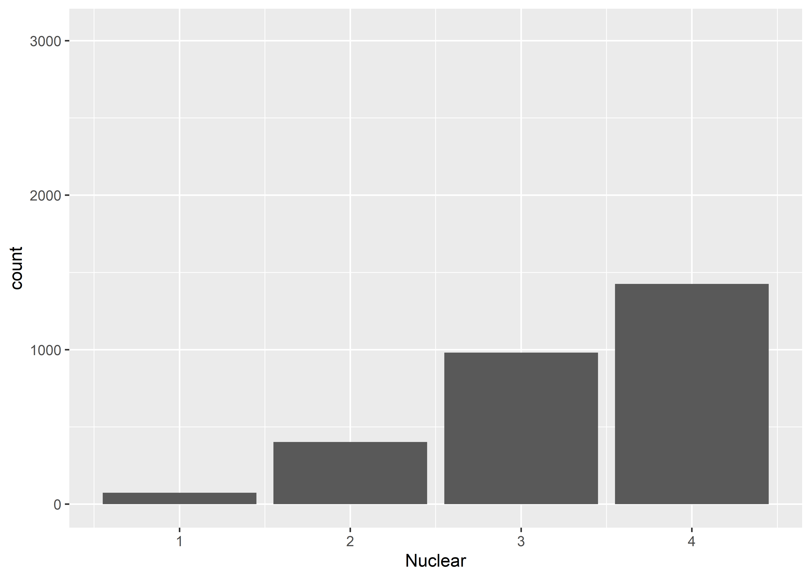
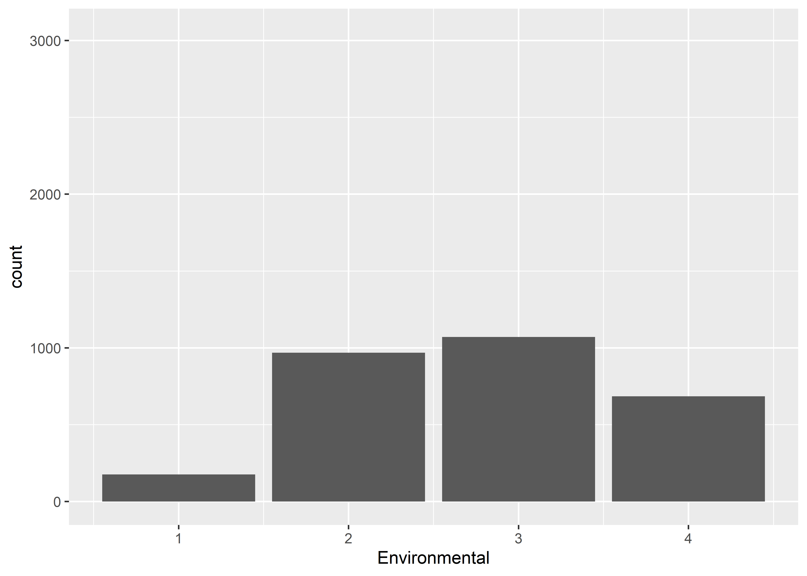
The risks judged to be most likely on average were pandemics, illnesses, and hybrid threats. The least likely experiences were nuclear power plant disasters, wars against Finland, and workplace accidents. Judging from missing values, respondents were most certain about the probability of experiencing extreme weather phenomena, and least certain about workplace accidents (Figure 2).
Control Variables
Comment: Remove gender, age and degree of urbanisation completely? Only used to check that data represents general population, not used in main analysis!
We used three substantive control variables:
- Direct experience of fire
- Near miss-experience of fire
- Emergency services employment
Respondents were asked whether they had had a direct experience of a fire in the past twelve months. They were similarly asked whether they had experienced a near-miss situation, i.e., a scenario that could have ended in a fire but did not. Finally, the respondents were asked whether they work in the emergency services in any capacity. These three variables constitute our substantive control variables, and operationalise three distinct hypotheses (see Section 3) regarding the network structure. Their descriptive statistics are presented in Figure 3.
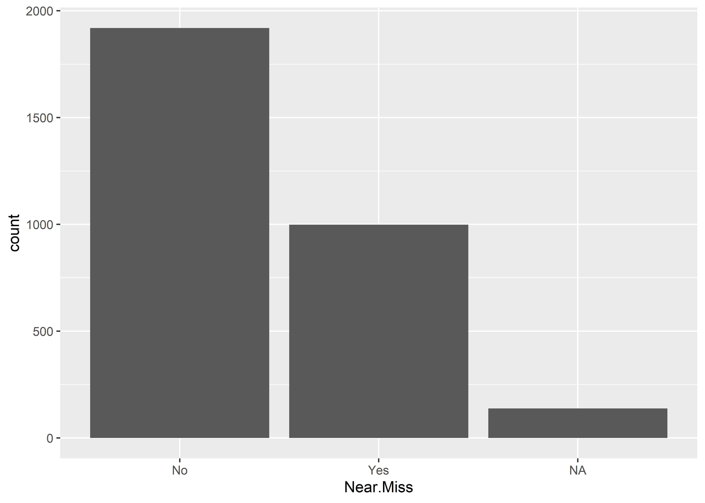

Methods
All analyses were completed in RStudio version 2023.03.0 build 386 (Posit Team, 2023). Data were processed using the tidyverse (Wickham et al., 2019) and naniar (Tierney & Cook, 2023) packages. Plots and graphs were generated in ggplot2 (Wickham, 2016), including the ggstatsplot (Patil, 2021) extension package. MDS rotations were done in smacof (Mair et al., 2022) and partial correlations with ppcor (Kim, 2015). Network comparison was conducted in NetworkComparisonTest (Van Borkulo et al., 2022). Network graphs and related plotting and statistics were conducted in bootnet (Epskamp et al., 2018) and qgraph (Epskamp et al., 2012). The article was written in RMarkdown and compiled using the knitr (Xie, 2014, 2015, 2023) package for reproducibility.
We started by fitting a model for the graphical representation of networks. We modelled a partial correlation network of the risk perception variables using the multidimensional scaling (MDS) technique (Jones et al., 2018). We thus retrieved Shepard curves for each MDS type and chose model type by balancing parsimony with increasing fit (reduction of the stress factor, see (Jones et al., 2018)). This model was only used to construct the MDS model.
For the main analysis, we fitted a pairwise Markov random field (PMRF) model as a Gaussian graphical model (GGM). We used Spearman correlations and the EBICglasso estimator function (Epskamp et al., 2012; Foygel & Drton, 2010). We fitted two models: a non-parametric model and a case-dropping network model. The former was used for presenting and analysing the network as a graph and as a plot of centrality indices, and the latter was used for analysing the stability of centrality indices on both system- and node levels (Epskamp et al., 2018).
Comment: Add more description here, especially in how to interpret CS coefficients and bootstrapped centrality measures.
To compare between groups, we estimated group-wise Gaussian graphical models and used the network comparison test (NCT) as outlined by Fried, Epskamp, Veerman and van Borkulo (2022).
Results
Network Estimation and Robustness
We first started by estimating the network model using the EBICglasso algorithm.
To graphically plot the network, we modelled the resulting network using the MDS method. Shepard plots (Figure 4) suggested that we use the spline model.
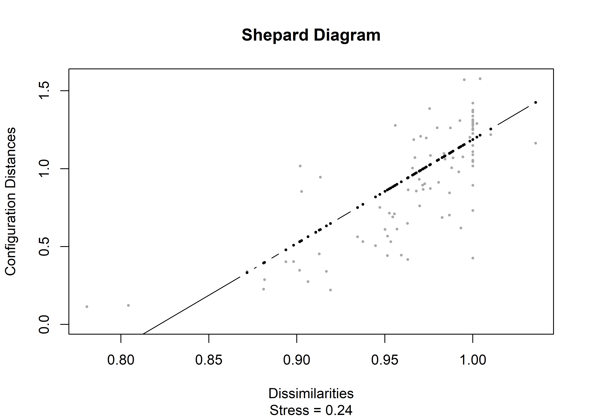
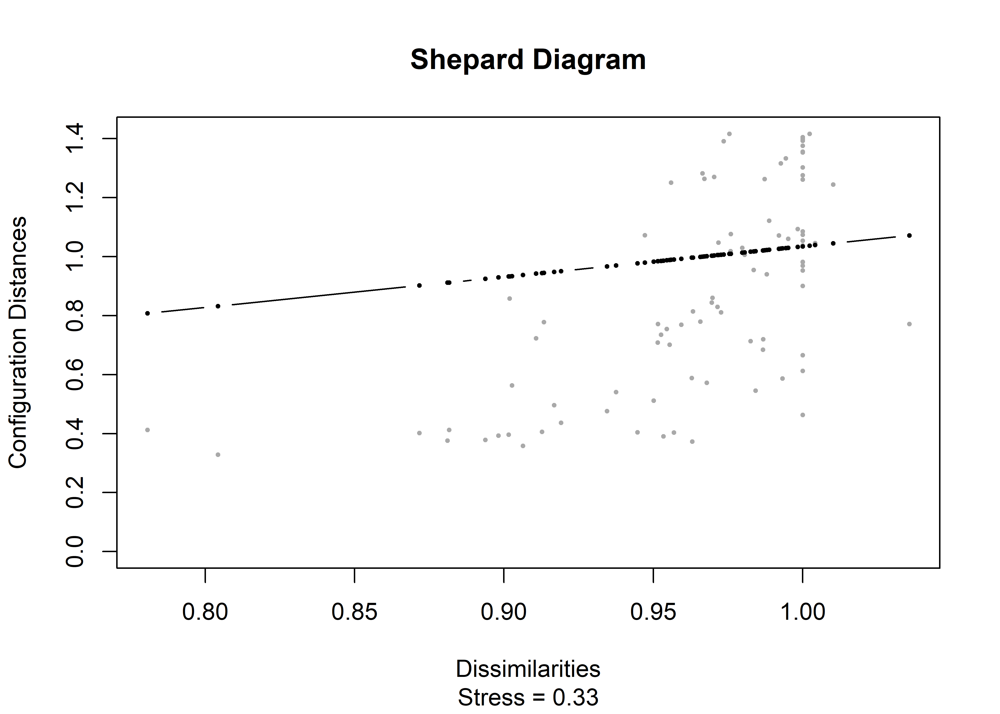
Comment: Check that Spearman and polychoric produces the same result (when matrix is definite positive).
We then retrieved a robust model of the graph using the bootnet package (Epskamp et al., 2018). The model uses the EBICglasso algorithm, which searches for the model that locally minimises the extended Bayesian Information Criterion (Epskamp et al., 2018; Foygel & Drton, 2010). The estimation is done using Spearman correlations because our data are expected non-normally distributed. While polychoric correlations would be possible, the small sample sizes in sub-population comparison may result in a non-positive definite correlation matrix, which disables analysis. We retrieved both non-parametric and case-dropping networks for analysis.
The robust network is plotted using the two-dimensional MDS solution as its layout, enabling us to interpret graphical distance as a proxy for vertex strength. Figure 5 shows the network graph.
| Node | Maximum | Minimum | Mean | SD | Betweenness | Closeness | Strength | Expected Influence |
|---|---|---|---|---|---|---|---|---|
| Weather | 0.16 | 0.00 | 0.04 | 0.05 | 0 | 0.00 | 0.59 | 0.59 |
| Traffic | 0.39 | 0.00 | 0.07 | 0.11 | 4 | 0.01 | 1.00 | 1.00 |
| Fire | 0.39 | 0.00 | 0.08 | 0.11 | 8 | 0.01 | 1.10 | 1.09 |
| Nuclear | 0.22 | -0.02 | 0.06 | 0.08 | 9 | 0.01 | 0.82 | 0.78 |
| Work | 0.19 | -0.07 | 0.04 | 0.07 | 1 | 0.01 | 0.67 | 0.51 |
| Leisure | 0.20 | 0.00 | 0.06 | 0.07 | 7 | 0.01 | 0.90 | 0.90 |
| War | 0.22 | 0.00 | 0.06 | 0.07 | 1 | 0.01 | 0.78 | 0.78 |
| Environmental | 0.19 | 0.00 | 0.07 | 0.07 | 14 | 0.01 | 1.02 | 1.02 |
| Pandemic | 0.22 | 0.00 | 0.07 | 0.08 | 9 | 0.01 | 0.96 | 0.96 |
| Illness | 0.22 | -0.07 | 0.07 | 0.08 | 14 | 0.01 | 1.06 | 0.91 |
| Violence | 0.17 | 0.00 | 0.06 | 0.06 | 8 | 0.01 | 0.90 | 0.90 |
| Operational | 0.24 | 0.00 | 0.07 | 0.07 | 7 | 0.01 | 0.95 | 0.95 |
| Hybrid | 0.35 | -0.02 | 0.06 | 0.11 | 5 | 0.01 | 0.92 | 0.85 |
| Polarization | 0.35 | 0.00 | 0.06 | 0.09 | 4 | 0.01 | 0.78 | 0.78 |
There are two distinct connections in the network: Traffic-Fire (0.39) and Hybrid-Polarization (0.35). Most other connections are fairly weak, with low-to-medium partial correlations.
The strongest connections are between Traffic and Fire (strength = 0.39). Most nodes have only positive connections, with nuclear, work, illness, and hybrid being the only nodes with connections below zero. Mean connection strength is low across most nodes, but variation among nodes is comparatively high.
Four node connections are negative: Fire-Hybrid (0), Nuclear-Hybrid (-0.02), Work-Illness (-0.07), and Hybrid-Work (-0.01).
Figure 6 shows node centrality measures by node and measure. Strength varies between 0.6 for extreme weather phenomena and 1.1 for fire.
Closeness is very low, with every node around 0.005 in closeness. The similarity in scores suggests that nodes are fairly evenly connected.
Betweenness, however, is much more varied. Weather presents a betweenness of zero, meaning that it does not feature in any shortest path connection in the network. At the other end, Environmental and Illness feature in fourteen shortest paths, thus being very central nodes in the network.
As there are very few negative connections, expected influence mirrors strength for most nodes. Fire, Nuclear, Work, Illness, Operational, and Hybrid present at least one negative connection, which results in their expected influence being slightly lower than their strength.
Table 2 shows the smallworldness statistics for the network. The smallworldness index is not substantially larger than either 1 or 3, suggesting that the network is not a small-world network (Humphries & Gurney, 2008; Newman, 2003). Neither transitivity nor average path length (APL) is substantially higher than their randomly generated counterparts, further suggesting that the network is not considered a small-world network.
| Smallworldness Index | Transitivity | APL | Random transitivity (95% CI) | Random APL (95% CI) |
|---|---|---|---|---|
| 1.024 | 0.731 | 1.264 | 0.714 (0.695-0.736) | 1.264 (1.264-1.264) |
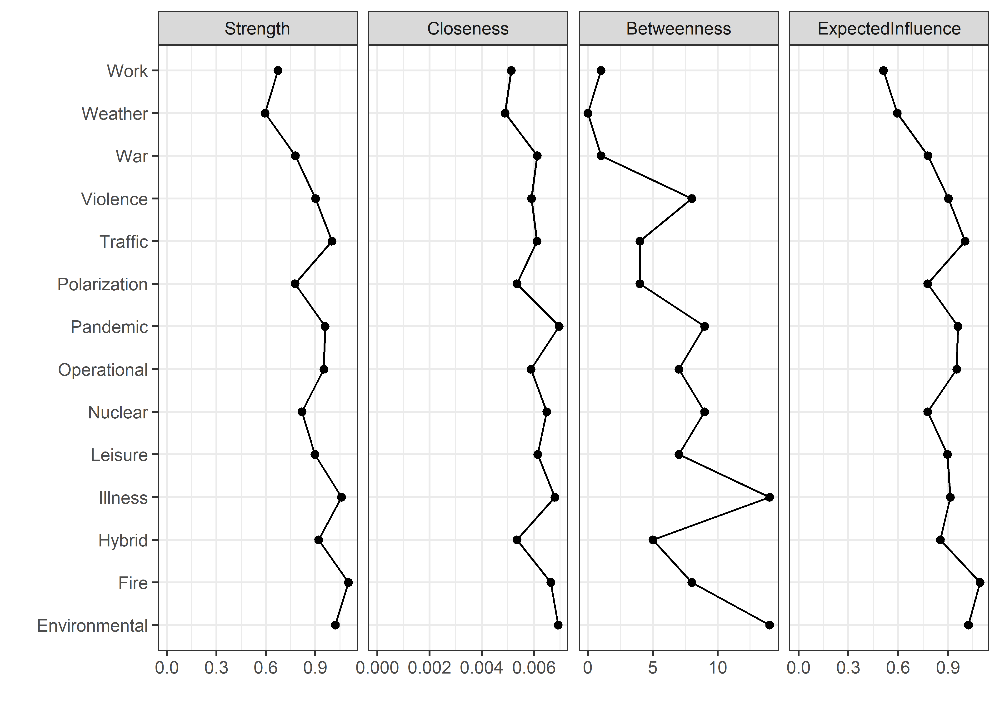
The case-dropped models can be correlated with the original model to estimate how well the case-dropped model centrality measures represent the original. The correlation stability coefficient (CS coefficient) then determines the proportion of cases that may be dropped whilst still retaining a correlation of \(r = p\), where \(p\) is the preferred correlational level, in \((1-\alpha)/100\) % of cases. For this study, we use the default values of \(r = 0.7\) and \(95\) per cent.
Previous research suggests that, when interpreting differences between centralities (e.g., if one risk perception is more central to the network than another), the centrality stability coefficient should preferably be above 0.5, with higher equalling a more stable centrality measure (Epskamp et al., 2018; Fried et al., 2022).
Figure 7 shows the stability of the centrality measures when case-dropping. The CS coefficients are listed in Table 3. Strength, closeness and expected influence are all stable, with up to 75 per cent of cases having to be dropped before the correlation drops below 0.7 in 95% of bootstraps. However, betweenness does not seem to be stable enough to interpret, at a CS coefficient of only 0.44.
| Measure | CS coefficient |
|---|---|
| Betweenness | 0.44 |
| Closeness | 0.75 |
| Expected Influence | 0.75 |
| Strength | 0.75 |

Figure 8 shows significance tests of the differences in connection strengths between each node-pair vertex, ordered by connection strength in the original estimated network. In other words, we tested whether two connections significantly differ from each other at \(\alpha = 0.05\). Around half of the comparisons are significant. The Work-Illness vertex is significantly different from every other vertex. Traffic-Fire and Hybrid-Polarization are both significantly different from all other vertices except from each other.
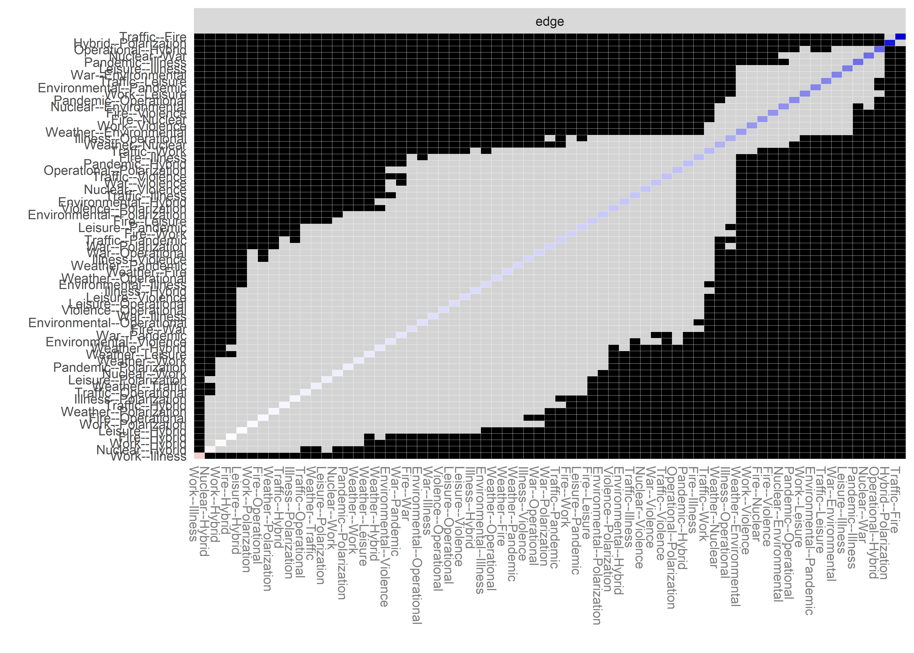
Network Comparisons
We compared networks conditioned on the three substantive control variables (see Section 4.1.3): Direct experience of fire, near miss-experience of fire, and emergency services employment. In each case, we expect a lower global density - reflecting the weakening of System II risk assessment in favour of System I. We further hypothesised that the node strength of fire experience would follow a unique development:
- Experiencing a fire leads to higher probability (the salience hypothesis).
- Experiencing a near-miss leads to lower probability (the false certainty hypothesis).
- Working in emergency services leads to higher probability (the culture hypothesis).
The statistics are shown in Table 4. The networks are graphed in Figure 9.
Table 4: Network NCT results by substantive control variable
| Test | Statistic | Significance |
|---|---|---|
| Network variance | \(\Delta_{O} =\) 0.11 | \(p =\) 0.5295 |
| Global strength | \(\Delta_{S}^{g} =\) 0.28 | \(p =\) 0.001 |
| Closeness | \(\Delta_{C} =\) 0 | \(p =\) 0.0909 |
| Betweenness | \(\Delta_{B} =\) -7 | \(p =\) 0.1598 |
| Strength | \(\Delta_{S}^{l} =\) -0.14 | \(p =\) 0.0669 |
| Expected Influence | \(\Delta_{EI} =\) -0.14 | \(p =\) 0.046 |
| Test | Statistic | Significance |
|---|---|---|
| Network variance | \(\Delta_{O} =\) 0.15 | \(p =\) 0.012 |
| Global strength | \(\Delta_{S}^{g} =\) 0.17 | \(p =\) 0.003 |
| Closeness | \(\Delta_{C} =\) 0 | \(p =\) 0.4705 |
| Betweenness | \(\Delta_{B} =\) 1 | \(p =\) 0.9221 |
| Strength | \(\Delta_{S}^{l} =\) 0.01 | \(p =\) 0.8831 |
| Expected Influence | \(\Delta_{EI} =\) 0.01 | \(p =\) 0.8811 |
| Test | Statistic | Significance |
|---|---|---|
| Network variance | \(\Delta_{O} =\) 0.37 | \(p =\) 0.035 |
| Global strength | \(\Delta_{S}^{g} =\) 0.04 | \(p =\) 1 |
| Closeness | \(\Delta_{C} =\) 0 | \(p =\) NA |
| Betweenness | \(\Delta_{B} =\) 8 | \(p =\) 0.2438 |
| Strength | \(\Delta_{S}^{l} =\) 0.24 | \(p =\) 0.1369 |
| Expected Influence | \(\Delta_{EI} =\) 0.24 | \(p =\) 0.1389 |
UPDATE 12/5/2023: Check why EMS Global strength is p = 1, closeness is C = 0 and p = NA. There were some Github discussions about similar problems - is this, too, a bug?
Direct experience of fire is related to a weak effect on network structure (Table 4 (a)). Global strength is significantly different, indicating that the overall connectivity has changed between networks. However, network variance is not significantly different. Since the network is dense and non-smallworld, the difference between variance and strength may be due to small changes in many network edges leading to a overall significant change in the sum of edge strength, while leaving individual maximum changes small (see Van Borkulo et al., 2022).
Near-miss experiences have a stronger effect on the network structure (Table 4 (b)). Network variance and global strength are both significantly different, suggesting that a change in overall network structure has occurred. In both cases, the statistic has grown in the network estimated from respondents that have experienced a near miss. In other words: the network seems to be slightly denser in people who have nearly experienced a fire.
Finally, working in emergency services is related to a weak effect on network structure, but inverse to that of a direct fire experience (Table 4 (c)). Network variance is significantly different, indicating that one or more edges have distinctly changed. However, global strength difference is non-significant, suggesting that these changes have not resulted in an overall change in the total edge strength of the network. In other words: working in emergency services is related to a shift in network structure, but not an increase or decrease in density per se.
For the Fire node, no changes seem to have occurred in either the near-miss or the EMS employment comparisons. However, for individuals who have a direct fire experience, Expected Influence has dropped significantly. This suggests that the connections between Fire and other nodes has grown slightly more negative. Because the network does not show any negative edges (Figure 9 (b)), this change corresponds to a drop in intensity of positive connections. The Fire node also shows marginally significant changes on closeness and strength in the direct experience comparison. The change in strength mirrors that of the EI change, further suggesting that the centrality of Fire has slightly dropped.
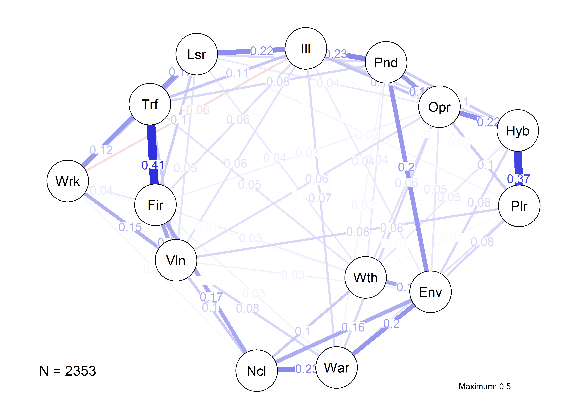
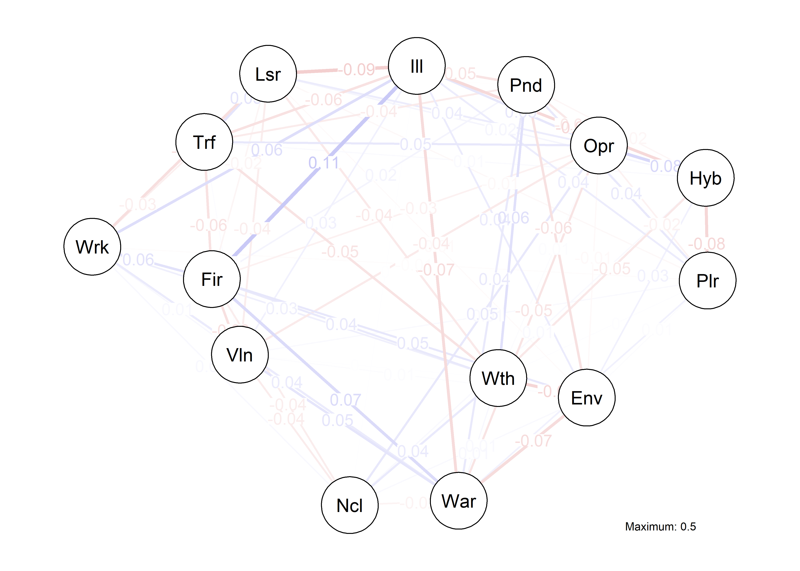
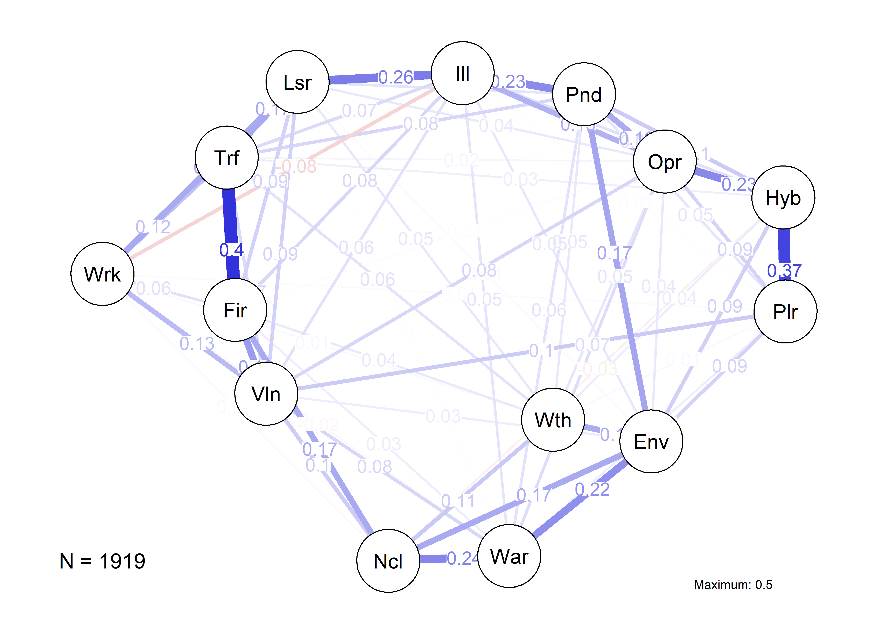
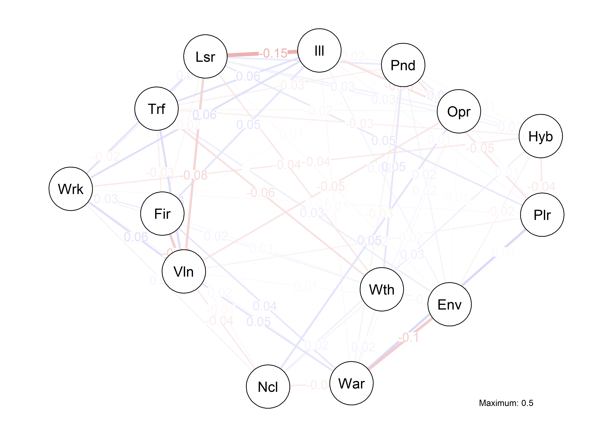
Discussion
To repeat from Section 3, we had six hypotheses, grouped into system and node level hypotheses. Both groups of hypotheses state the same:
System level:
- \(H_1^S:\) Experiencing a fire leads to a sparser risk perception network
- \(H_2^S:\) Experiencing a near-miss leads to a denser risk perception network
- \(H_3^S:\) Working in emergency services leads to a sparser risk perception
Node level:
- \(H_1^N:\) Experiencing a fire leads to a decrease in the centrality of fire in the risk perception network
- \(H_2^N:\) Experiencing a near-miss leads to an increase in the centrality of fire in the risk perception network
- \(H_3^N:\) Working in emergency services leads to a decrease in the centrality of fire in the risk perception network
On the system level, we found no support for \(H_1^S\) or \(H_3^S\). In both cases, we even found partial support for the opposite direction: for both direct experiences and working in EMS, networks partially have grown more dense than for others.
However, we found strong support for \(H_2^S\), that a near-miss experience leads to a denser risk perception network.
UPDATE 12/5/2023: What does it mean for the node to drop in centrality, viz. the idea that experience lowers System II intensity? Is increased centrality == increased intensity, or is it the other way around?
On the node level, the situation is very different. Overall, we found very little support for our hypotheses. We found marginal support for \(H_1^N\): subjectively experienced probabilities of fire might become less central in the overall network after experiencing a near-miss experience. All other changes were non-significant.
References
References
Atreya, A., Ferreira, S., & Kriesel, W. (2013). Forgetting the Flood? An Analysis of the Flood Risk Discount over Time. Land Economics, 89(4), 577–596. https://doi.org/10.3368/le.89.4.577
Aven, T. (2022). On Some Foundational Issues Concerning the Relationship Between Risk and Resilience. Risk Analysis, 42(9), 2062–2074. https://doi.org/10.1111/risa.13848
Bégout, B. (2007). Husserl and the phenomenology of attention (pp. 13–32). Springer.
Bin, O., & Landry, C. E. (2013). Changes in implicit flood risk premiums: Empirical evidence from the housing market. Journal of Environmental Economics and Management, 65(3), 361–376. https://ideas.repec.org//a/eee/jeeman/v65y2013i3p361-376.html
Epskamp, S., Borsboom, D., & Fried, E. I. (2018). Estimating psychological networks and their accuracy: A tutorial paper. Behavior Research Methods, 50(1), 195–212. https://doi.org/10.3758/s13428-017-0862-1
Epskamp, S., Cramer, A. O. J., Waldorp, L. J., Schmittmann, V. D., & Borsboom, D. (2012). qgraph: Network visualizations of relationships in psychometric data. Journal of Statistical Software, 48(4), 1–18.
Foygel, R., & Drton, M. (2010). Extended bayesian information criteria for gaussian graphical models. 23. https://papers.nips.cc/paper_files/paper/2010/hash/072b030ba126b2f4b2374f342be9ed44-Abstract.html
Fried, E. I., Epskamp, S., Veenman, M., & Van Borkulo, C. D. (2022). Network Stability, Comparison, and Replicability. In Network Psychometrics with R: A Guide for Behavioral and Social Scientists. Routledge. https://doi.org/10.4324/9781003111238
Gallagher, J. (2014). Learning about an Infrequent Event: Evidence from Flood Insurance Take-Up in the United States. American Economic Journal: Applied Economics, 6(3), 206–233. https://doi.org/10.1257/app.6.3.206
Haas, A., Laubichler, M., Applegate, J., Steudle, G., & Jaeger, C. C. (2022). A Proposal for Integrating Theories of Complexity for Better Understanding Global Systemic Risks. Risk Analysis, 42(9), 1945–1951. https://doi.org/10.1111/risa.13608
Heidegger, M. (1962). Being and time. Harper & Row.
Humphries, M. D., & Gurney, K. (2008). Network ‘Small-World-Ness’: A Quantitative Method for Determining Canonical Network Equivalence. PLOS ONE, 3(4), e0002051. https://doi.org/10.1371/journal.pone.0002051
Jones, P. J., Mair, P., & McNally, R. J. (2018). Visualizing psychological networks: A tutorial in R. Frontiers in Psychology, 9. https://doi.org/10.3389/fpsyg.2018.01742
Kellens, W., Terpstra, T., & De Maeyer, P. (2013). Perception and Communication of Flood Risks: A Systematic Review of Empirical Research. Risk Analysis, 33(1), 24–49. https://doi.org/10.1111/j.1539-6924.2012.01844.x
Kim, S. (2015). Ppcor: An R Package for a Fast Calculation to Semi-partial Correlation Coefficients. Communications for Statistical Applications and Methods, 22(6), 665–674.
Koning, K. de, Filatova, T., & Bin, O. (2017). Bridging the Gap Between Revealed and Stated Preferences in Flood-prone Housing Markets. Ecological Economics, 136, 1–13. https://doi.org/10.1016/j.ecolecon.2017.01.022
Magliocca, N. R., & Walls, M. (2018). The role of subjective risk perceptions in shaping coastal development dynamics. Computers, Environment and Urban Systems, 71, 1–13. https://doi.org/10.1016/j.compenvurbsys.2018.03.009
Mair, P., Groenen, P. J. F., & De Leeuw, J. (2022). More on multidimensional scaling in r: Smacof version 2. Journal of Statistical Software, 102(10), 147. https://doi.org/10.18637/jss.v102.i10
Newman, M. E. J. (2003). The structure and function of complex networks. SIAM Review, 45(2), 167–256. https://doi.org/10.1137/S003614450342480
Patil, I. (2021). Visualizations with statistical details: The ’ggstatsplot’ approach. Journal of Open Source Software, 6(61), 3167. https://doi.org/10.21105/joss.03167
Posit Team. (2023). RStudio: Integrated Development Environment for R (Version 2023.3.0.386). Posit Software, PBC.
Renn, O. (2021). New challenges for risk analysis: systemic risks. Journal of Risk Research, 24(1), 127–133. https://doi.org/10.1080/13669877.2020.1779787
Renn, O., Laubichler, M., Lucas, K., Kröger, W., Schanze, J., Scholz, R. W., & Schweizer, P.-J. (2022). Systemic Risks from Different Perspectives. Risk Analysis, 42(9), 1902–1920. https://doi.org/10.1111/risa.13657
Renn, O., Lucas, K., Haas, A., & Jaeger, C. (2019). Things are different today: The challenge of global systemic risks. Journal of Risk Research, 22(4), 401–415. https://doi.org/10.1080/13669877.2017.1409252
Schütz, A. (1962). Collected papers i: The problem of social reality (M. Natanson, Ed.). Martinus Nijhoff.
Schütz, A. (1967). The phenomenology of the social world. Northwestern University Press.
Schütz, A. (2011). Collected papers v: Phenomenology and the social sciences (L. Embree, Ed.). Springer Science+Business Media.
Slovic, P., Finucane, M. L., Peters, E., & MacGregor, D. G. (2004). Risk as analysis and risk as feelings: Some thoughts about affect, reason, risk, and rationality. Risk Analysis, 23(2), 311–322. https://doi.org/https://doi.org/10.1111/j.0272-4332.2004.00433.x
Tierney, N., & Cook, D. (2023). Expanding Tidy Data Principles to Facilitate Missing Data Exploration, Visualization and Assessment of Imputations. Journal of Statistical Software, 105(7). https://doi.org/10.18637/jss.v105.i07
Van Borkulo, C. D., Van Bork, R., Boschloo, L., Kossakowski, J. J., Tio, P., Schoevers, R. A., Borsboom, D., & Waldorp, L. J. (2022). Comparing network structures on three aspects: A permutation test. Psychological Methods. https://doi.org/10.1037/met0000476
Wickham, H. (2016). Ggplot2: Elegant graphics for data analysis. Springer-Verlag New York. https://ggplot2.tidyverse.org
Wickham, H., Averick, M., Bryan, J., Chang, W., McGowan, L., François, R., Grolemund, G., Hayes, A., Henry, L., Hester, J., Kuhn, M., Pedersen, T., Miller, E., Bache, S., Müller, K., Ooms, J., Robinson, D., Seidel, D., Spinu, V., … Yutani, H. (2019). Welcome to the Tidyverse. Journal of Open Source Software, 4(43), 1686. https://doi.org/10.21105/joss.01686
Xie, Y. (2014). Knitr: A comprehensive tool for reproducible research in R. In V. Stodden, F. Leisch, & R. D. Peng (Eds.), Implementing reproducible computational research. Chapman and Hall/CRC.
Xie, Y. (2015). Dynamic documents with R and knitr (2nd ed.). Chapman and Hall/CRC. https://yihui.org/knitr/
Xie, Y. (2023). Knitr: A general-purpose package for dynamic report generation in R [Manual]. https://yihui.org/knitr/
Zhai, G., & Ikeda, S. (2008). Empirical analysis of Japanese flood risk acceptability within multi-risk context. Natural Hazards and Earth System Sciences, 8(5), 1049–1066. https://doi.org/10.5194/nhess-8-1049-2008
Zhou, S. (2020). Intergroup Contact Theory in a Nutshell: A Meta-Meta- Analytic Examination of Intergroup Contact Theory and the Contact Space [PhD thesis].
Footnotes
This distinction already suggests that the underlying function is a linear spectrum from low to high intensity. This thought needs to be further developed.↩︎